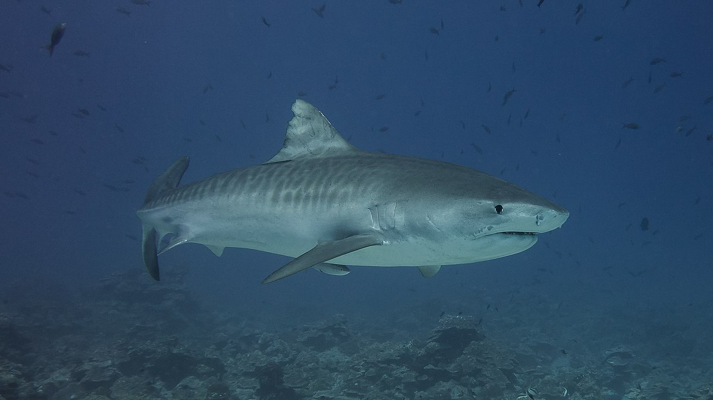

|  |
Habitat:Com ampla distribuição por águas costeiras e oceânicas, tropicais e subtropicais com temperaturas quentes, o tubarão-tigre é uma espécie pelágica e costeira, podendo habitar uma variedade de habitats marinhos como praias e recifes de corais. Tende a ser encontrado próximo da superfície mas também ocupa águas um pouco mais profundas, de até 350 metros de profundidade. |
Hábito de vida:Uma espécie tipicamente solitária, formando agregações temporárias apenas enquanto há uma enorme disponibilidade de alimento. É uma espécie altamente migratória, podendo viajar por muitos quilômetros, e, pode aventurar-se em mar aberto durante suas migrações. Um predador oportunista, o tubarão-tigre costuma se alimentar daquilo que encontra, peixes, aves, mamíferos, tartarugas, moluscos, crustáceos e até mesmo detritos não comestíveis e lixo. |
Características gerais:Uma das maiores espécies de tubarão, o tubarão-tigre pode atingir 7,4 metros de comprimento e viver até 50 anos. Também uma das espécies mais conhecidas, é facilmente identificada pelas manchas escuras em seu dorso, que facilitam com que o animal se camufle no oceano. Apresenta um corpo grande e robusto e um focinho relativamente curto e largo. É uma das espécies com maiores registros de ataques a seres-humanos. Dado seu comportamento curioso e voraz, juntamente com o fato de que costuma habitar regiões costeiras e praias, é considerado um dos tubarões mais perigosos para os seres humanos, sendo necessário maior respeito e cuidado quando em contato com esta espécie. A principal ameaça a esta espécie é a sobrepesca, incidental e direcionada. Tem como principais produtos suas barbatanas, carne e seu fígado. Muitas vezes também são pescados e mortos por medo de ataques a seres humanos. |
Distribuição Mundial:Espécie com distribuição circumglobal, amplamente distribuído por águas tropicais e temperadas quentes, este tubarão ocorre por praticamente todas regiões costeiras dos Oceanos Atlântico, Índico e Pacífico, e também em muitas regiões insulares. Pode aparecer sazonalmente em águas mais frias, já tendo registro da ocorrência deste animal em locais como Reino Unido e até Islândia. |